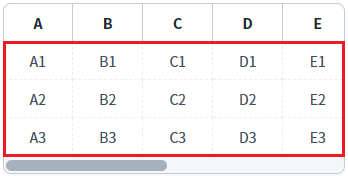
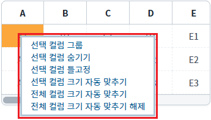
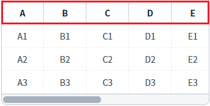
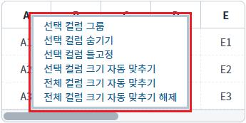
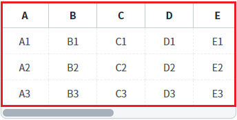
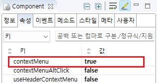
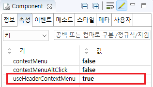
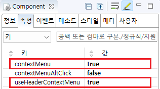

GridView의 컨텍스트 메뉴를 사용할 수 있도록 설정한 예제입니다. 마우스의 오른쪽 버튼을 클릭하여 컨텍스트 메뉴를 표시할 수 있으며, 바디 컬럼 영역과 헤더 컬럼 영역에서 이 기능을 사용할 수 있습니다.
바디 영역에서 컨텍스트 메뉴 사용하기
헤더 영역에서 컨텍스트 메뉴 사용하기
바디 영역과 헤더 영역에서 컨텍스트 메뉴 사용하기
컨텍스트 메뉴 사용 안 함(기본 설정)
예제 영역 '바디 영역에서 컨텍스트 메뉴 사용하기'에 구성된 GridView에서 테스트합니다.1
STEP 1: GridView의 바디 영역에서 '마우스 오른쪽 버튼'을 클릭합니다.
Image 1.브라우저(Chrome) 실행 예시 - GridView의 바디 영역

2
STEP 2: 실행 결과를 확인합니다.
컨텍스트 메뉴가 표시됩니다.
Image 2.브라우저(Chrome) 실행 예시

예제 영역 '헤더 영역에서 컨텍스트 메뉴 사용하기'에 구성된 GridView에서 테스트합니다.1
STEP 1: GridView의 헤더 영역에서 '마우스 오른쪽 버튼'을 클릭합니다.
Image 3.브라우저(Chrome) 실행 예시 - GridView의 헤더 영역

2
STEP 2: 실행 결과를 확인합니다.
컨텍스트 메뉴가 표시됩니다.
Image 4.브라우저(Chrome) 실행 예시

예제 영역 '바디 영역과 헤더 영역에서 컨텍스트 메뉴 사용하기'에 구성된 GridView에서 테스트합니다.1
STEP 1: GridView의 헤더 영역 또는 바디 영역에서 '마우스 오른쪽 버튼'을 클릭합니다.
Image 5.브라우저(Chrome) 실행 예시 - GridView의 헤더와 바디 영역

2
STEP 2: 실행 결과를 확인합니다.
컨텍스트 메뉴가 표시됩니다.
Image 6.브라우저(Chrome) 실행 예시
1
GridView의 속성을 정의합니다.
[필수] contextMenu="true"
[default: false, true] context menu 사용 여부.
Image 7.웹스퀘어 스튜디오의 Component View - 속성 설정 예시

Example 1.Source
<!-- gridView 의 소스 본문 예시 --> <w2:gridView contextMenu="true" dataList="data:dlt_exam"> <!-- 중략 --> </w2:gridView>
1
GridView의 속성을 정의합니다.
[필수] useHeaderContextMenu="true"
[default: false, true] header context menu 사용 여부.
Image 8.웹스퀘어 스튜디오의 Component View - 속성 설정 예시

Example 2.Source
<!-- gridView 의 소스 본문 예시 --> <w2:gridView useHeaderContextMenu="true" dataList="data:dlt_exam"> <!-- 중략 --> </w2:gridView>
GridView의 속성을 정의합니다.
[필수] contextMenu="true"
[default: false, true] context menu 사용 여부.
[필수] useHeaderContextMenu="true"
[default: false, true] header context menu 사용 여부.
Image 9.웹스퀘어 스튜디오의 Component View - 속성 설정 예시

Example 3.Source
<!-- gridView 의 소스 본문 예시 --> <w2:gridView contextMenu="true" useHeaderContextMenu="true" dataList="data:dlt_exam"> <!-- 중략 --> </w2:gridView>
contextMenu
useHeaderContextMenu